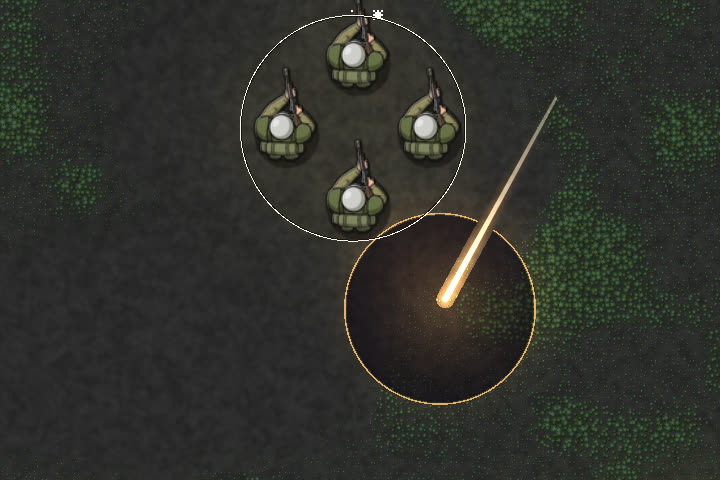
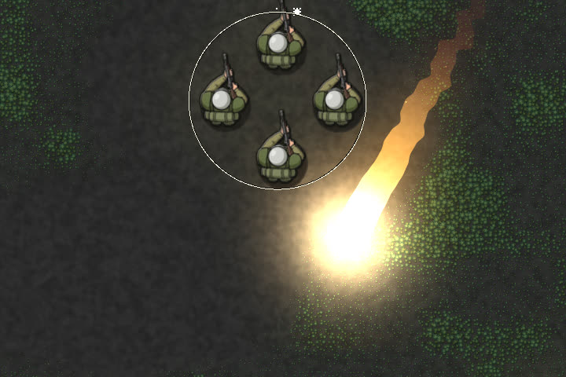
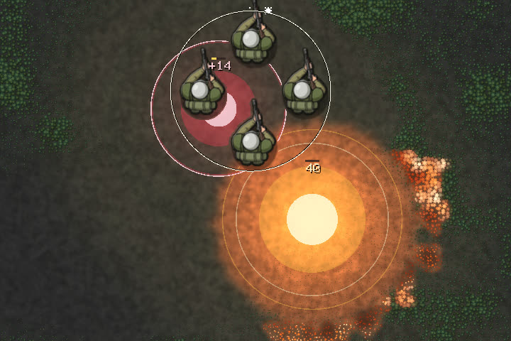
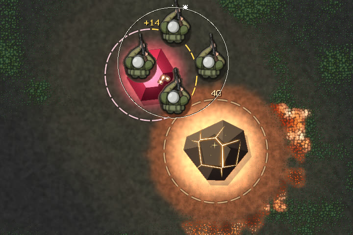

<title>Starfall and core look</title>
<meta name="claude:viewport-fit-sides" content="cover">
<link rel="stylesheet" href="https://fonts.googleapis.com/css2?family=Space+Grotesk:wght@500;700&family=Inter:wght@400;600&display=swap">
<style>
/* Layout: one column, each moment a before/after pair side by side, stacking on a phone. */
:root {
  --bg: #f3f1ee; --fg: #1d1a18; --muted: #6b625b; --line: #ddd6cf; --ore: #c7701c; --core: #b8273f;
  --display: "Space Grotesk", system-ui, sans-serif; --body: Inter, system-ui, sans-serif;
}
@media (prefers-color-scheme: dark) { :root:not([data-theme="light"]) { --bg: #151312; --fg: #ece7e2; --muted: #a39a92; --line: #2e2a27; --ore: #f0a050; --core: #ea6a80; color-scheme: dark } }
:root[data-theme="dark"] { --bg: #151312; --fg: #ece7e2; --muted: #a39a92; --line: #2e2a27; --ore: #f0a050; --core: #ea6a80; color-scheme: dark }
body { background: var(--bg); color: var(--fg); font-family: var(--body); line-height: 1.55; padding-left: max(16px, env(safe-area-inset-left, 0px)); padding-right: max(16px, env(safe-area-inset-right, 0px)); padding-block: 32px 48px }
main { max-width: 1080px; margin: 0 auto; display: grid; gap: 40px }
h1, h2 { font-family: var(--display); text-wrap: balance; margin: 0 }
h1 { font-size: 2rem } h2 { font-size: 1.25rem }
p { margin: 0; max-width: 68ch }
.intro { display: grid; gap: 12px }
.pair { display: grid; grid-template-columns: 1fr 1fr; gap: 12px }
@media (max-width: 640px) { .pair { grid-template-columns: 1fr } }
figure { margin: 0; display: grid; gap: 6px; min-width: 0 }
figcaption { font-size: .8rem; letter-spacing: .06em; text-transform: uppercase; color: var(--muted) }
video, img { width: 100%; max-width: 100%; border-radius: 4px; display: block; background: #000 }
section { display: grid; gap: 12px; border-top: 1px solid var(--line); padding-top: 20px }
ul { margin: 0; padding-left: 1.2em; display: grid; gap: 6px; max-width: 70ch }
b.ore { color: var(--ore) } b.core { color: var(--core) }
</style>
<main>
  <div class="intro">
    <h1>Starfall and core look</h1>
    <p>An artist's pass over falling ore and boss cores. Planet 1, the same staged fall and core in both films (ore at 0:02, landing at 0:12; a core dropped by the squad at 0:13). Filmed on software Vulkan in the cloud, so the frame rate is not the game's.</p>
  </div>

  <section>
    <h2>Zoom 12, 0:02 to 0:22</h2>
    <div class="pair">
      <figure><figcaption>Before</figcaption><video src="z12-before.mp4" controls loop muted playsinline autoplay></video></figure>
      <figure><figcaption>After</figcaption><video src="z12-after.mp4" controls loop muted playsinline autoplay></video></figure>
    </div>
  </section>

  <section>
    <h2>Zoom 6, 0:08 to 0:22</h2>
    <div class="pair">
      <figure><figcaption>Before</figcaption><video src="z6-before.mp4" controls loop muted playsinline autoplay></video></figure>
      <figure><figcaption>After</figcaption><video src="z6-after.mp4" controls loop muted playsinline autoplay></video></figure>
    </div>
  </section>

  <section>
    <h2>The fall coming in, 0:11.6</h2>
    <div class="pair">
      <figure><figcaption>Before</figcaption></figure>
      <figure><figcaption>After</figcaption></figure>
    </div>
  </section>

  <section>
    <h2>On the ground, 0:16</h2>
    <div class="pair">
      <figure><figcaption>Before</figcaption></figure>
      <figure><figcaption>After</figcaption></figure>
    </div>
  </section>

  <section>
    <h2>What changed</h2>
    <ul>
      <li><b>Warning:</b> a soft shadow grows and darkens under a dashed red ring at the blast's kill radius; four ticks close onto it as the ore comes. Red because the blast hurts soldiers.</li>
      <li><b>Meteor:</b> a white-hot head and a trail cooling from gold to ember to smoke, sparks shed along it, growing as it nears and lighting the ground.</li>
      <li><b>Impact:</b> a flash, a ring of light out to the kill radius (never past it), sparks thrown along it, and a small camera shake. The crater is the engine's, as before.</li>
      <li><b class="ore">Ore:</b> a cut lump of dark rock with molten cracks that cool from white gold to dull red over its 60 s life, gold flecks glinting. It shrinks as it is drained.</li>
      <li><b class="core">Core:</b> a cut crimson gem with a heart that beats faster as its 15 s run out, cracking in its last third, bursting out when the boss breaks.</li>
      <li><b>Collecting:</b> the ring to stand in is now a dial: it fills gold clockwise with what the squad took and dark from the other side with what the slime ate (the bar is gone). Gold motes stream from the drop to each soldier draining it, and an emptied drop bursts gold under its "+N".</li>
    </ul>
    <p>Bends one guideline a little: the core's beat and the ore's glints are drawn, not simulated. Both read the drop's real state (its life left, its worth left), so they show nothing the game is not doing.</p>
  </section>
</main>
